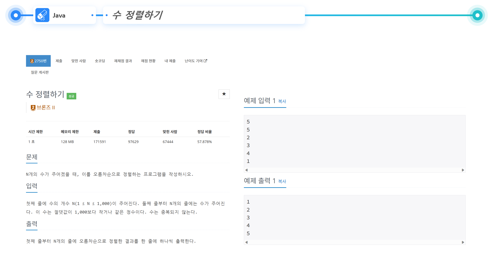
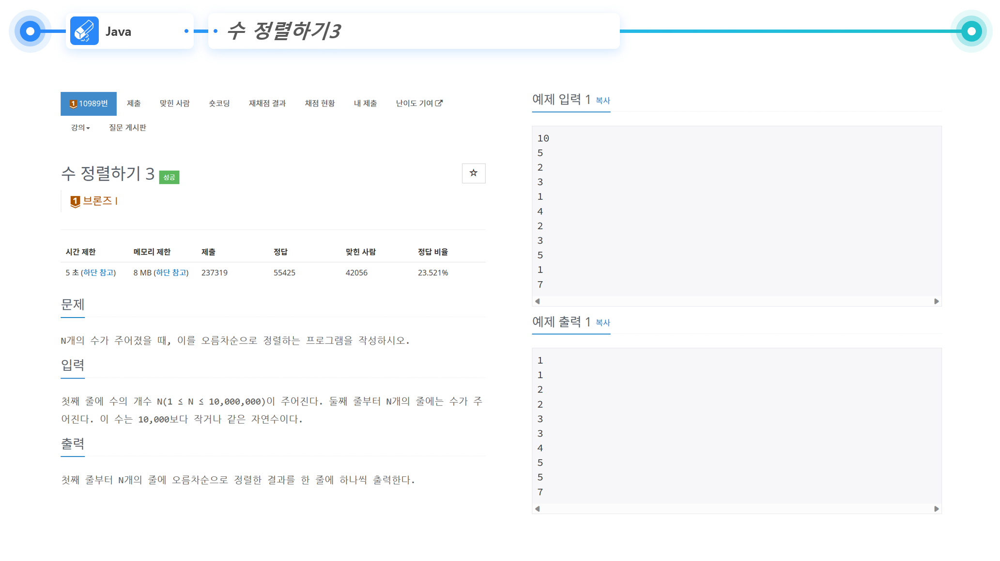
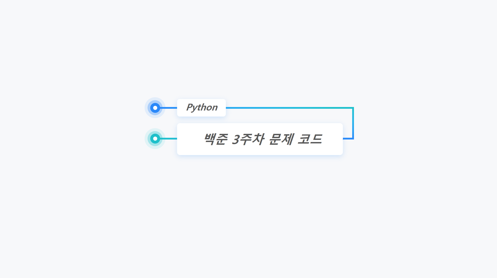
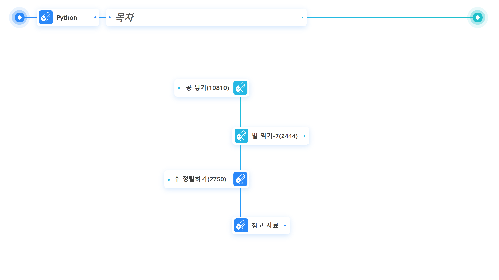
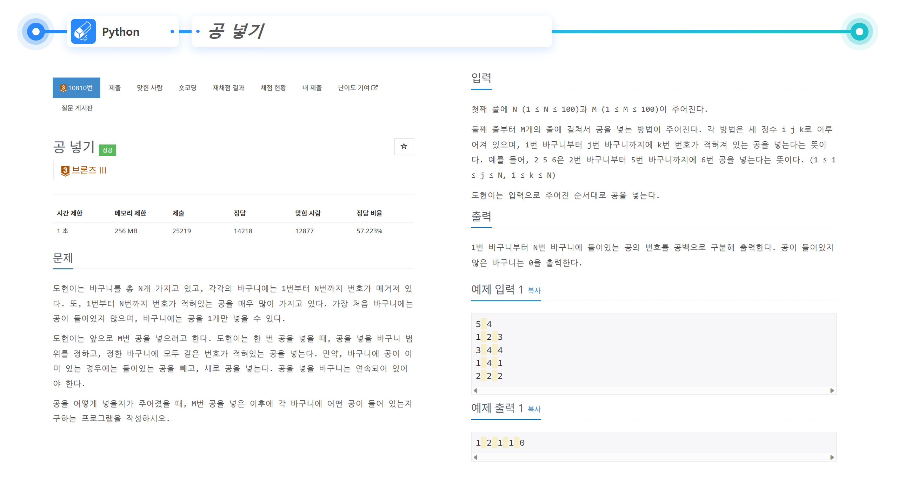

| 이름 | 김다빈 |
|---|---|
| 소속 | 경성대학교 소프트웨어학과 |
| 학번 | 2022564004 |
| 관심 전공 분야 | 웹/앱, 프로그래밍 언어론, 네트워크, 컴퓨터 시스템, 정보 보안 |
| 생일 | 2003년 7월 6일 |
| MBTI | ENTJ |
안녕하세요. 경성대학교 소프트웨어학과 2학년 22학번 김다빈입니다.
2003년 7월 6일 생으로 2023년 기준 만 20살이고, MBTI는 ENTJ입니다.
현재 관심 있는 전공 분야는 웹/앱, 프로그래밍 언어론, 네트워크, 컴퓨터 시스템, 정보 보안입니다.
3학년이 되기 전 졸업 후 진로 분야를 좀 더 명확히 하는 데 목표하고 있습니다.
노래를 들으며 휴식하거나 가볍게 산책하는 것, 맛있는 디저트 먹는 것을 특히 좋아하고
주말에 여유가 있을 때는 가족들과 시간을 보내거나 친구들과 만나 이곳저곳 구경다니는 것을 좋아합니다.
가끔 휴식이 필요할 때는 바다에 가서 멍 때리며 시간을 보내기도 합니다.
백준 알고리즘 스터디
참여 인원 : 4명
진행 기간 : 2023.03.15 ~ 2023.06.21
진행 장소 : 경성대학교 제2공학관 522호
2023-1학기 동안 학과 동기들끼리 모여 매주 화, 목마다 알고리즘 스터디를 진행하였습니다.
동적 계획법(Dynamic Programming), 분할정복(Divide&Conquer) 등 기본적인 알고리즘 개념 공부와 함께
매주 백준(baekjoon)에서 문제를 4개씩 선택해 각자 풀어온 후, 한 사람당 한 문제씩 풀이를 맡아
서로에게 해당 문제를 풀이해주고 피드백을 받는 형식으로 진행하였습니다.
※ 언어는 Java로 지정하여 진행했습니다.
|  |  |
파이썬 스터디
진행 기간 : 2023.05.01 ~ 2023.05.26
진행 장소 : 경성대학교 제2공학관 629호
대상 : 소프트웨어학과 학부 1학년생
이수 인원 : 7명
1학년 학우들에게 도움이 되고 싶었는데 마침 1학년 1학기에 파이썬을 배운다기에
파이썬 기초 개념을 알려주는 스터디를 진행하면 좋을 것 같아서 희망하는 인원을 모아
5월 한 달 간 매주 월요일 오후 4시부터 1시간 30분씩 스터디를 진행하였습니다.
처음 파이썬을 접하는 학우들이 대부분이라 개념을 먼저 알려주고,
백준(baekjoon)을 이용해 그날 배운 개념을 바로 적용하며 공부할 수 있도록 구성했습니다.
|  |  |  |
2023-2 열정+학기제(진행중)
참여 인원 : 2명
진행 기간 : 2023.09.01 ~ 2023.12.21
진행 장소 : 경성대학교 제2공학관 526호
웹과 앱에 대한 공부를 하며 주제를 잡아 프로젝트를 하나 진행해보는 게 좋을 것 같다는 생각을 하고 있었는데
방학 때 학과 단체톡방에 공지된 하반기 열정+학기제 인원 모집 공고를 보고 학과 선배와 함께 프로젝트를 신청해 진행하게 되었습니다.
마침 저희가 소속된 CS 랩실에 공식 웹사이트가 없어서 프로젝트 주제는 "웹사이트 및 안드로이드 앱을 이용한 CS-아카이브 제작"으로 정해
매주 9시간씩 시간을 정해 웹/앱 공부, 프로젝트 작업을 진행하고 있습니다.